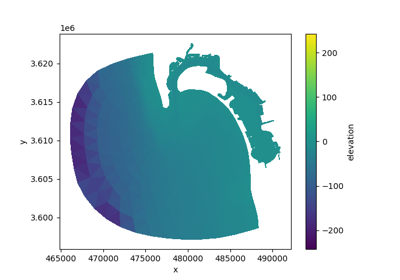
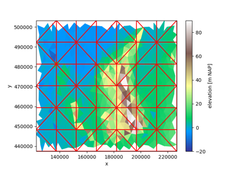
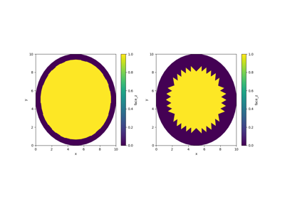
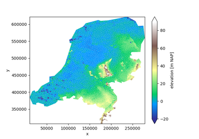

Examples#
The examples in this gallery demonstrate the functionality of the xugrid
package. Every example can be downloaded as either a Python script or a Jupyter
notebook for interactive exploration.

Quick overview


OverlapRegridder

Connectivity

Regridding overview